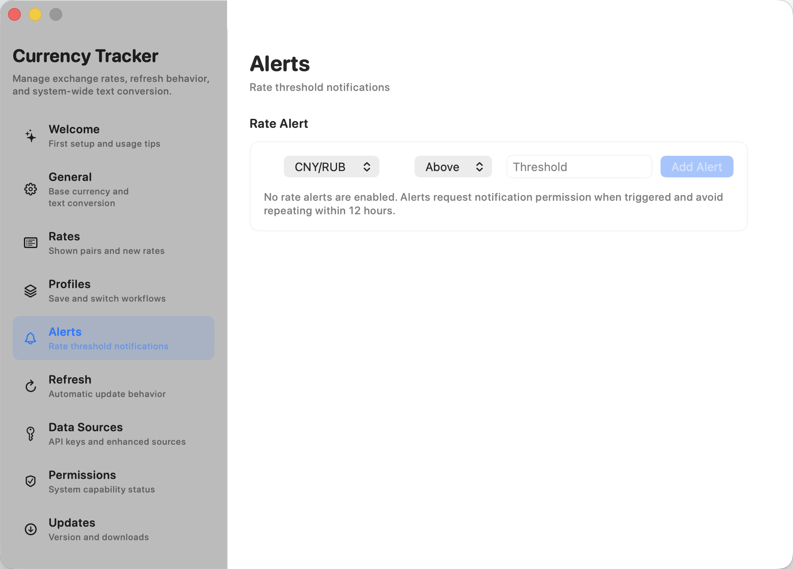

Menu bar rates
Pin selected pairs, refresh manually or automatically, and switch the menu bar item between icon, compact pair, and featured-rate modes.

Current release v1.5.1
Exchange rates, trend charts, conversion, alerts, profiles, and provider API management from the macOS menu bar.
Workflow
Currency Tracker keeps a focused exchange-rate workspace close to the menu bar, then gives you deeper controls only when you need them.
Pin selected pairs, refresh manually or automatically, and switch the menu bar item between icon, compact pair, and featured-rate modes.
Expand any pair into a history chart or a two-way converter without leaving the menu bar panel.
Convert selected amounts from other macOS apps through Services or a global shortcut.
Save different pair lists and refresh behavior as profiles, then add threshold alerts for important rates.
Use public fallback data sources, add mainstream API credentials, or define and test a custom JSON endpoint template.
Check GitHub Releases from Settings, verify downloaded packages with SHA256 checksums, and install prepared updates inside the app after confirmation.
Use the app in English, Chinese, Russian, Japanese, Korean, French, German, Spanish, Portuguese, or Italian, with a direct Settings link to macOS language preferences.
Resize the menu panel, pinned panel, and Settings window when you need more space for long localized labels or larger rate lists.
Screenshots
The menu panel is designed for quick scanning. Settings split advanced behavior into dedicated sidebar sections so the app can grow without one crowded page.



Data sources
Currency Tracker uses public fallback sources by default. For broader coverage or better reliability, add credentials for supported providers or define a custom JSON API template with secure key entry and a connection test.
Release
This bugfix release focuses on pinned-panel stability and clearer scroll feedback in dense menu and settings layouts.
Privacy
Preferences, selected pairs, profiles, alerts, and API credentials stay on your Mac. Provider keys are stored in the app's local Application Support data rather than the system Keychain. The project does not operate a backend service for collecting local files, clipboard contents, or device data.
External providers only receive exchange-rate requests for the data sources you enable. The app is distributed through GitHub Releases and is not currently Apple-notarized, so macOS may ask for first-launch approval.